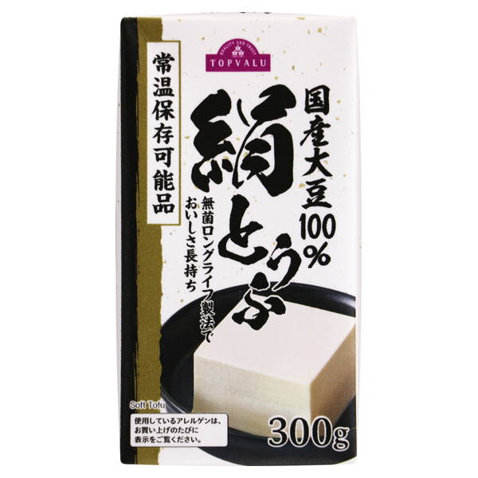

ONLINE CATALOG
ネットで買える
常温保存豆腐一覧
通販や店舗で購入できる常温保存豆腐をまとめています。順位付けはせず、内容量や食感、保存期間の違いから探せる一覧です。
広告について
当ページはアフィリエイト広告を利用しています。リンク先で商品を購入すると、売上の一部が当サイトに還元されることがあります。


STORE PICK
番外編・店舗で買える常温保存豆腐
12個セットではなく、店舗などで1個から試したい方の選択肢です。

店舗・ネットスーパー
国産大豆100％絹とうふ
トップバリュ
国産大豆100％絹とうふ
常温保存可能品 300g
大豆の風味が感じられ、なめらかな食感が特徴の常温保存可能な絹とうふです。
- 内容量
- 300g
- 販売者
- イオン株式会社
- 取扱先
- イオン店舗またはイオンネットスーパー
商品情報確認日：2026年6月15日
店舗や地域、時期により取扱状況が異なります。来店または注文前に各店舗・ネットスーパーでご確認ください。
掲載商品は、当サイトのおすすめ順位を示すものではありません。商品名・内容量は確認日時点の販売ページをもとに掲載しています。